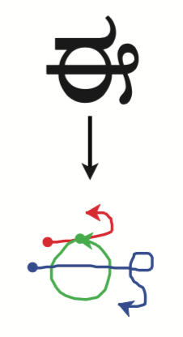
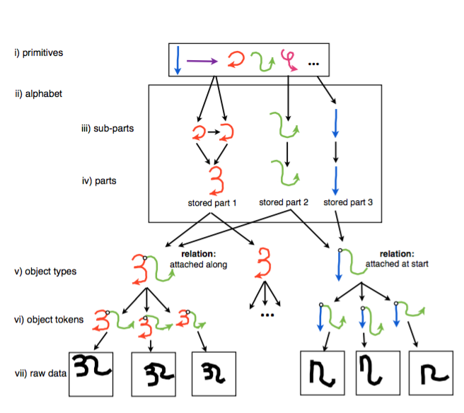

The image classification challenge: Many machine learning tasks are concerned with classification. A common example is classifying images, whether the images be a photo of a cat or a hand-written digit. Converting hand-writing to computer-readable characters has many useful applications; for example, parsing a doctor's hand-written notes for electronic storage and future analysis.
Many contemporary machine learning algorithms, like the neareast-neighbors algorithm, rely on a large set of examples for predicitve power. However, many new machine learning methodologies are leveraging an understanding of human intuition to improve how machines perform at classification tasks which have few examples.
Below I highlight the popular, simple and powerful neareast-neighbors algorithm applied to the MNIST hand-written digit classification challenge, and introduce how Bayesian Program Learning is being used to tackle the same tasks. The motivating research paper focused on the omniglot dataset.
The MNIST dataset of hand-drawn integers is comparable to the omniglot dataset of hand-drawn alphabetic characters in that it includes many examples with a high degree of variation. It is the variation across two-dimensions which makes the classification difficult.
But computers are simple creatures and it's hard for them to understand an image. Images have to be decomposed into simple data structures and a large set of examples is often required to train a classifier. These examples and their labels are the training set in classification tasks.
A classic and intuitive classification method is called nearest-neighbors classification. Neareset neighbors uses the pixel values of an image in a list form to find examples which are similar to new unlabeled examples.
When a new example needs to be classified, classification methods use the training data to determine which class is most likely for the new data. The new example is compared to the training set.
For each item in the training set, the new image is given a distance score. Those items in the training set which are "closest" to the new image are used to classify the new image.
Predictions for the class of the new observation are made on the basis of the distance from objects in the training set. With few examples, many classification algorithms have a hard time making the right predictions.
Humans, however, can classify new observations after just one example. We recognize common shapes and spatial relationships better than current machine learining algorithms.
Below is an example of a machine's first attempt to mimick hand writing.
Researchers are incorporating ideas about how the human brain learns into new methodologies of machine learning called Bayesian Program Learning. Bayesian Program Learning learns common strokes of alphabets and has demonstrated strong performance in classification and creative tasks.
 Images courtesy of Science Magazein, see resources for more information.